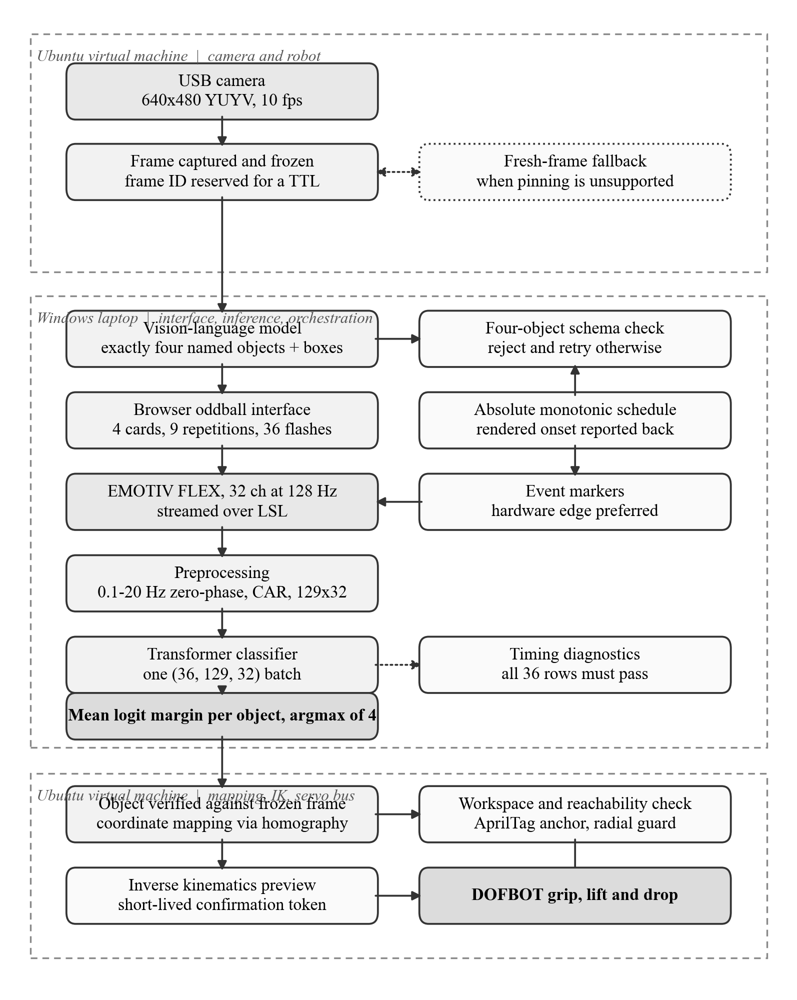
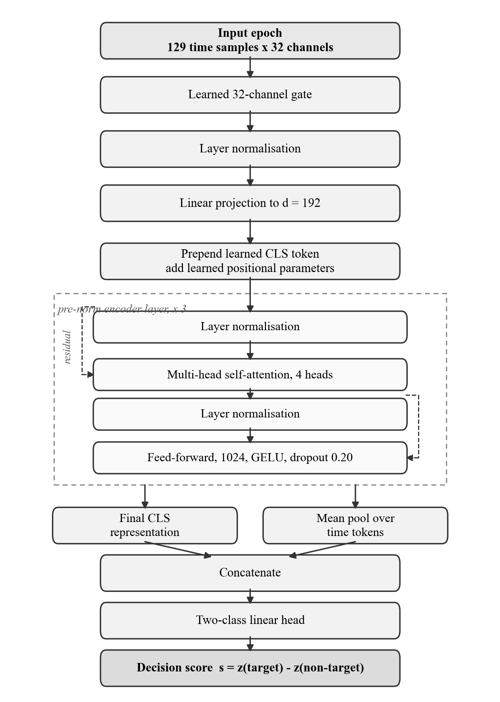
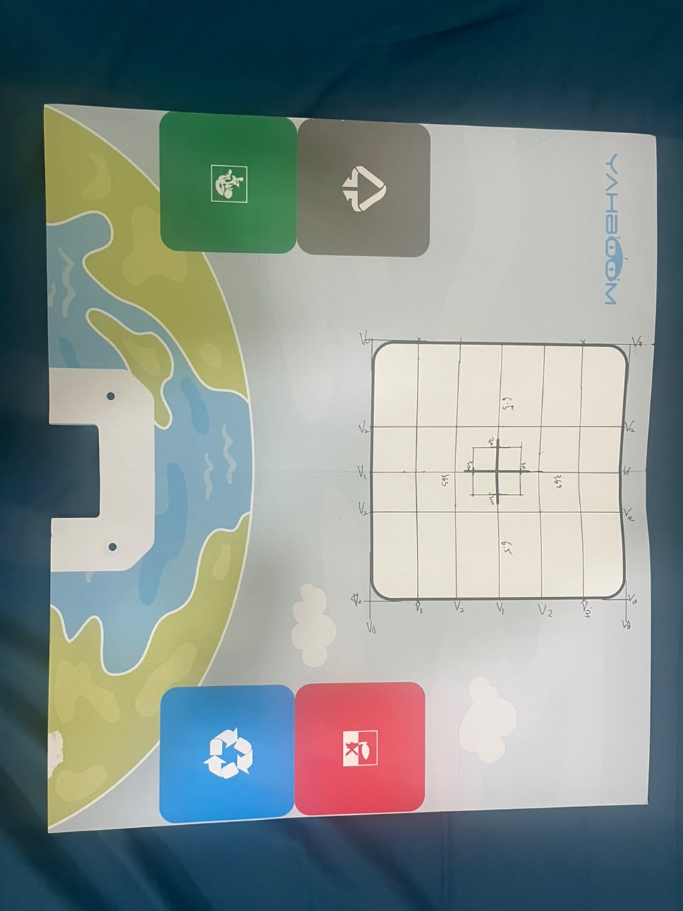
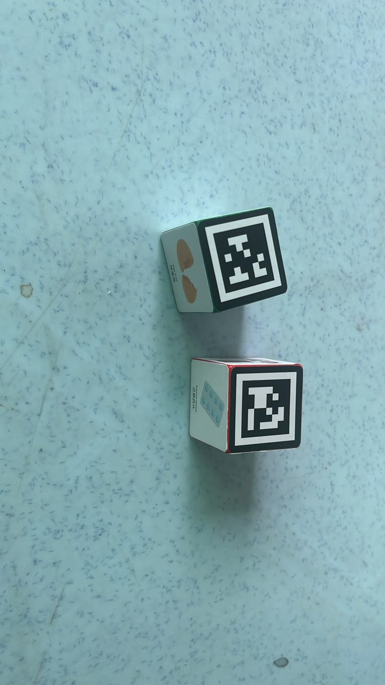
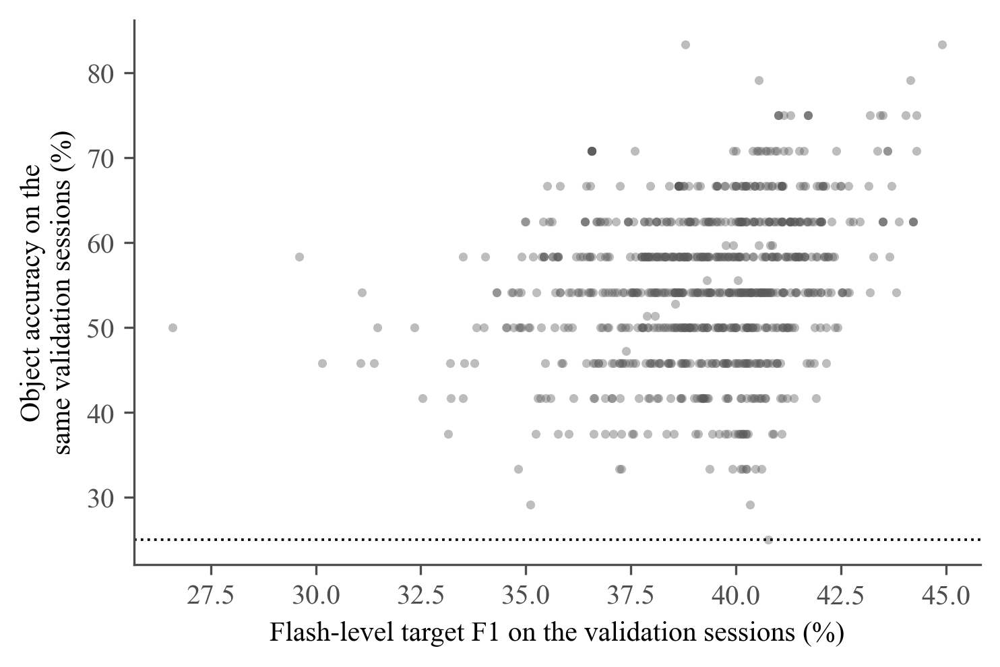

Visual protocol
Visual protocolFour-object stimulus interface
The camera identifies exactly four candidate objects.
Final-year project · EEG-BCI
P300 EEG / Transformer / DOFBOT arm
In my final-year project the camera scene is turned into a visual oddball interface with four objects.

Visual protocolThe camera identifies exactly four candidate objects.

P300 decoderThe deployed route applies 0.1–20 Hz zero-phase filtering and a common-average reference.

CalibrationCalibration mat that maps the camera frame onto the robot workspace.

RevalidationLocates the target in the workspace and revalidates it.

DiagnosisHistorical validation-session F1 by object, used for diagnosis.
The V2 development record holds 48 successful arm-command results out of 68 records. This figure measures whether a commanded motion completed, the physical grasp and retrieval outcome is evaluated separately from the selection result.